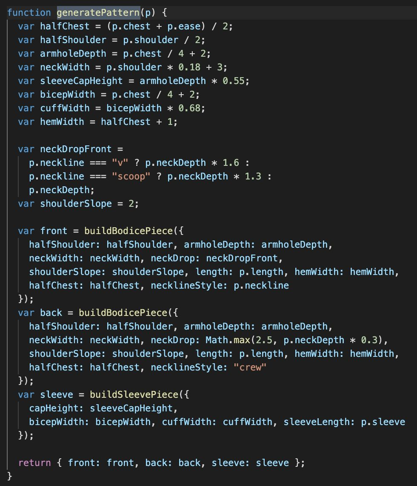
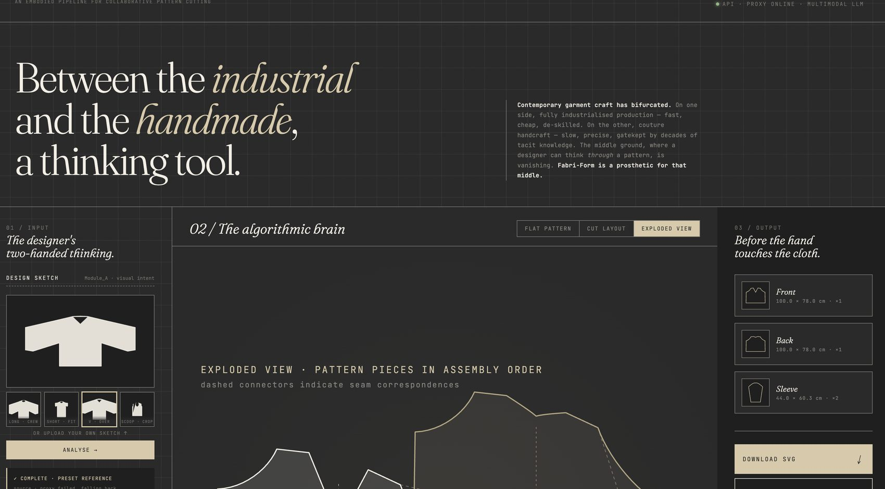
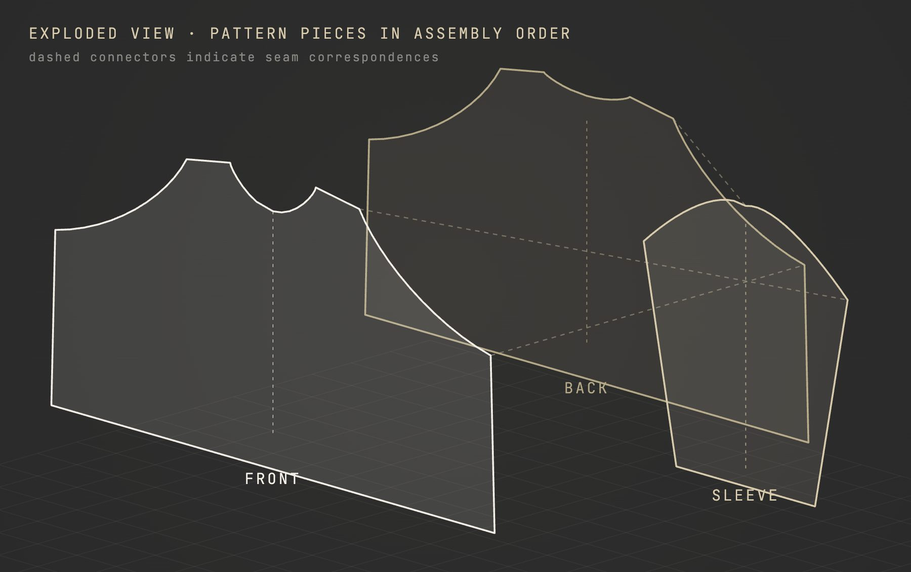
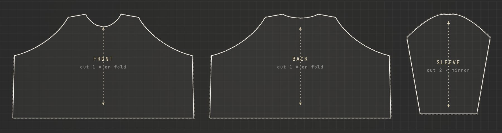
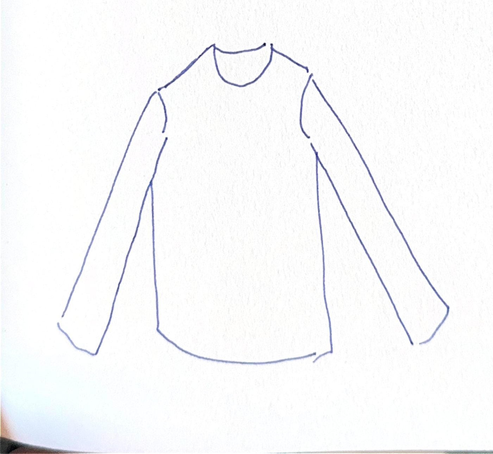
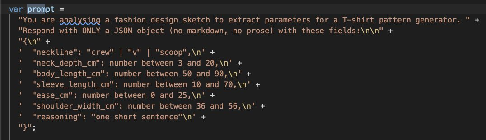
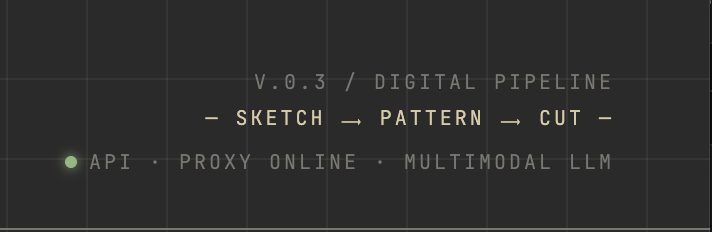
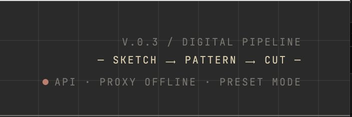
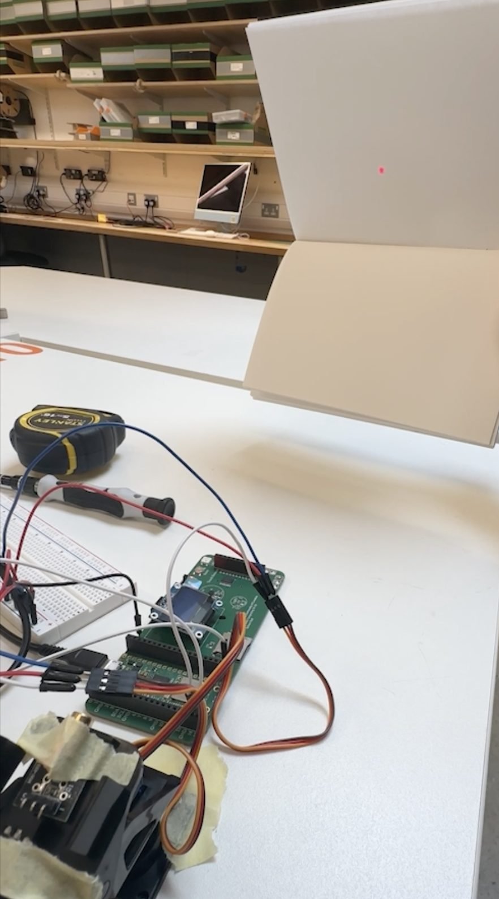
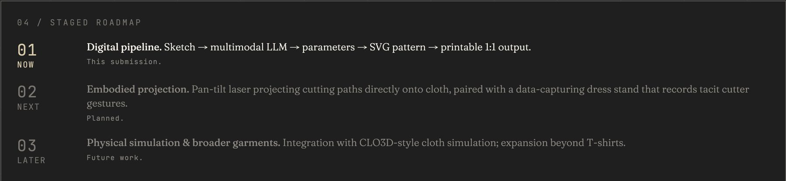

Practice-based research · MA Computational Arts · Goldsmiths · 2026
Fabri-Form
A translation tool between a sketch and a pattern. Draw a garment by hand; a multimodal model fills in seven bounded parameters; the browser draws a printable 1:1 block. Six sliders let you overrule every inference it made.
video, 4 min · vimeo.com/1186248027 · try it live ↗
"Young designers suffer because they don't know how to actualise what they imagine. And senior makers suffer because young designers cannot communicate what they want. The real problem is this mutual incomprehension." a senior Taipei-based pattern cutter, interviewed April 2026
The whole project is built around that sentence. Garment making has split into two halves that no longer talk: industrial production on one side — fast, precise, de-skilled — and gate-kept couture handcraft on the other. The middle ground, where a designer thinks through a pattern, is disappearing.
Pressed on whether a tool like this actually serves the craft it claims to honour, the same cutter answered with a paradox: a system that compensates for dwindling expertise also accelerates that dwindling. It "strips away the profession itself." I built with that in view rather than against it.
The interview also moved the addressee. I had imagined a tool for pattern cutters, building on a Taipei internship — something to help senior makers externalise their 3D thinking. That tool would have served only one end of a broken line.
01 — the pipeline
pen on paper to paper patternThe geometry is a pattern cutter's, not a model's.
Pattern generation runs entirely in the browser. The drafting is a simplified derivation of Aldrich's metric block-cutting system — half-chest, armhole depth, neck width and sleeve cap height computed from a handful of body measurements by Aldrich's proportional logic, then drawn as cubic Bézier curves. The model never draws anything. It only supplies numbers, and the numbers go into a method that predates it.
The output is three pieces — front, back, and a sleeve cut twice — viewable as a flat pattern, as a cut layout for estimating fabric, or as an exploded assembly diagram with the seam correspondences drawn in.

the drafting function — Aldrich's proportions, in code

the interface — input, the algorithmic brain, output

exploded assembly — dashed connectors mark the seams that meet

the flat pattern it prints from — front, back, sleeve cut twice
The model is not invited to interpret. It is asked to fill in a form.
The browser sends the sketch to a small Python proxy as a base64 image inside a deliberately restrictive prompt. Instead of letting the model describe the garment in prose, the prompt specifies a JSON schema with seven fields — neckline style, neck depth, body length, sleeve length, ease, shoulder width, and one sentence of reasoning — and every numeric field carries an explicit minimum and maximum.
That constraint is the argument. What Tocchetti and colleagues call transparent guidance is made literal here: six sliders expose every parameter the model inferred, and the designer can overrule any of them. Authorship stays with the person, not the inference.
The proxy itself is thin — it keeps the API key server-side, adds the CORS headers the endpoint does not provide, and answers a health check. Read another way, it is the file that names what the project does: it stands in for an absent figure, the pattern cutter, without becoming that figure.

what gets sent — a sketch, drawn by hand, encoded and posted to the model

the prompt — seven fields, each with a floor and a ceiling. A schema, not an invitation
03 — friction points
two failures worth keepingThe bug was in the translations I had assumed were mechanical.
Early on the model read a sketch correctly and returned a crew neckline. The drawing came out with a V-neck. The fault was downstream — a default in the slider state was overriding the parsed value — and tracking it down was easy. What it left behind was not.
I had been describing the pipeline as one translation, sketch to pattern. It is four: sketch to JSON, JSON to state, state to SVG, SVG to printed paper. The failure was not in the inference, which is the part everyone watches. It was in a handover I had assumed was plumbing.


the two states the interface will admit to being in
The fallback is the more honest version of the question.
The proxy ran on localhost during development. Once the front end was hosted, the browser could no longer reach it, and moving to a public host brought cold starts and timeouts with it. So I built a local fallback: if the proxy is unreachable, the interface offers preset sketches and a pixel-level heuristic that runs entirely in the browser.
That is not graceful degradation. The cutter the proxy stands in for is, in real life, frequently unreachable. The offline mode says what the project is about more plainly than the online one does.
Stage 01 ends at paper. That is a decision, not a shortfall.
The pattern prints at 1:1, the seams line up, the geometry holds. It does not land on cloth, and that is the boundary the project chose. A separate bench exercise — driving a pan-tilt laser to draw simple shapes — sits beside the work as the seed of Stage 02.
Before a line can be projected onto fabric, the translation it encodes has to be shown to hold. The software stage is not a prototype of the hardware stage; it is its precondition. Moving to cloth before the translation is honest would be exactly the automation this project refuses.
What Stage 01 demonstrates is narrow: that the middle ground between sketch and pattern can be inhabited on screen — and that the most fragile translations were not the model's, but mine.

the Stage 02 seed — a pan-tilt laser, drawing shapes on a bench

what is submitted, what is planned, what is later
The paradox the cutter named is not resolved by Stage 01, and was never going to be.
- liveyvwhy.github.io/fabriform ↗ — works offline in preset mode if the proxy is asleep
- built withplain HTML, CSS and JavaScript, no build step; a standard-library Python proxy; a multimodal LLM behind it
- methoda semi-structured interview with a senior pattern cutter, conducted, transcribed and translated by me from Mandarin
- disclosedthe submission carries a full account of where AI was used in the making — including that the artefact is itself a demonstration of the collaboration it theorises
- theorySennett, Ingold, Barad, Almond, Tocchetti et al., Korosteleva & Sorkine-Hornung
- not doneno user study with designers or cutters. Nothing has been cut from these patterns in fabric